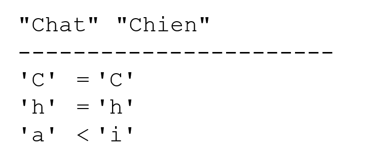

2. Noções básicas da linguagem Java
2.1. Introdução
Abordamos o Java, em primeiro lugar, como uma linguagem de programação clássica. Abordaremos os objetos mais tarde.
Num programa, encontram-se dois tipos de elementos
- dados
- as instruções que os manipulam
Normalmente, procuramos separar os dados das instruções:

2.2. Os dados em Java
O Java utiliza os seguintes tipos de dados:
- números inteiros
- números reais
- caracteres e cadeias de caracteres
- valores booleanos
- objetos
2.2.1. Os tipos de dados predefinidos
Tipo | Codificação | Domínio |
char | 2 bytes | carácter Unicode |
int | 4 bytes | [-231, 231-1] |
long | 8 bytes | [-263, 263 -1] |
byte | 1 byte | [-27 , 27 -1] |
short | 2 bytes | [-215, 215-1] |
float | 4 bytes | [3.4 10-38, 3.4 10+38] em valor absoluto |
double | 8 bytes | [1.7 10-308 , 1.7 10+308] em valor absoluto |
boolean | 1 bit | verdadeiro, falso |
String | referência do objeto | cadeia de caracteres |
Date | referência do objeto | data |
Character | referência do objeto | caractere |
Integer | referência do objeto | int |
Long | referência do objeto | long |
Byte | referência do objeto | byte |
Float | referência do objeto | float |
Double | referência de objeto | double |
Boolean | referência do objeto | booleano |
2.2.2. Notação de dados literais
entier | 145, -7, 0xFF (hexadecimal) |
real duplo | 134,789, -45E-18 (-45 × 10⁻¹⁸) |
real float | 134.789F, -45E-18F (-45 × 10⁻¹⁸) |
caractère | 'A', 'b' |
cadeia de caracteres | "hoje" |
booléen | verdadeiro, falso |
date | new Date(13,10,1954) (dia, mês, ano) |
2.2.3. Declaração de dados
2.2.3.1. Função das declarações
Um programa manipula dados caracterizados por um nome e um tipo. Esses dados são armazenados na memória. No momento da compilação do programa, o compilador atribui a cada dado um local na memória caracterizado por um endereço e um tamanho. Faz-o com base nas declarações feitas pelo programador.
Além disso, estas permitem ao compilador detetar erros de programação. Assim, a operação
x=x*2;
será declarada como errada se x for, por exemplo, uma cadeia de caracteres.
2.2.3.2. Declaração de constantes
A sintaxe para declarar uma constante é a seguinte:
final tipo nome=valor; //define a constante nome=valor
ex.: final float PI=3.141592F;
Nota
Por que declarar constantes?
- A leitura do programa será mais fácil se dermos à constante um nome significativo:
ex.: final float taux_tva=0.186F;
- A modificação do programa será mais fácil se a «constante» vier a mudar. Assim, no caso anterior, se a taxa de IVA passar para 33%, a única alteração a fazer será modificar a instrução que define o seu valor:
final float taux_tva=0.33F;
Se tivéssemos utilizado explicitamente 0,186 no programa, seria necessário alterar inúmeras instruções.
2.2.3.3. Declaração de variáveis
Uma variável é identificada por um nome e está associada a um tipo de dados. O nome de uma variável Java tem n caracteres, sendo o primeiro alfabético e os restantes alfabéticos ou numéricos. O Java distingue entre maiúsculas e minúsculas. Assim, as variáveis FIN e fin são diferentes.
As variáveis podem ser inicializadas no momento da sua declaração. A sintaxe para declarar uma ou mais variáveis é:
onde identificateur_de_type é um tipo predefinido ou um tipo de objeto definido pelo programador.
2.2.4. As conversões entre números e cadeias de caracteres
número -> cadeia | "" + número |
cadeia -> int | Integer.parseInt(cadeia) |
cadeia de caracteres -> long | Long.parseLong(cadeia) |
cadeia -> duplo | Double.valueOf(cadeia).doubleValue() |
cadeia -> float | Float.valueOf(cadeia).floatValue() |
Eis um programa que apresenta as principais técnicas de conversão entre números e cadeias de caracteres. A conversão de uma cadeia para um número pode falhar se a cadeia não representar um número válido. Nesse caso, é gerado um erro fatal, denominado «exceção» em Java. Este erro pode ser tratado através da cláusula try/catch seguinte:
try{
appel de la fonction susceptible de générer l'exception
} catch (Exception e){
traiter l'exception e
}
instruction suivante
Se a função não gerar uma exceção, passa-se então para a instrução seguinte; caso contrário, passa-se para o corpo da cláusula catch e, em seguida, para a instrução seguinte. Voltaremos mais tarde à gestão de exceções.
import java.io.*;
public class conv1{
public static void main(String arg[]){
String S;
final int i=10;
final long l=100000;
final float f=(float)45.78;
double d=-14.98;
// número --> cadeia
S=""+i;
affiche(S);
S=""+l;
affiche(S);
S=""+f;
affiche(S);
S=""+d;
affiche(S);
//booleano --> cadeia
final boolean b=false;
S=""+new Boolean(b);
affiche(S);
// cadeia de caracteres --> int
int i1;
i1=Integer.parseInt("10");
affiche(""+i1);
try{
i1=Integer.parseInt("10.67");
affiche(""+i1);
} catch (Exception e){
affiche("Erreur "+e);
}
// cadeia de caracteres --> long
long l1;
l1=Long.parseLong("100");
affiche(""+l1);
try{
l1=Long.parseLong("10.675");
affiche(""+l1);
} catch (Exception e){
affiche("Erreur "+e);
}
// cadeia de caracteres --> double
double d1;
d1=Double.valueOf("100.87").doubleValue();
affiche(""+d1);
try{
d1=Double.valueOf("abcd").doubleValue();
affiche(""+d1);
} catch (Exception e){
affiche("Erreur "+e);
}
// cadeia de caracteres --> float
float f1;
f1=Float.valueOf("100.87").floatValue();
affiche(""+f1);
try{
d1=Float.valueOf("abcd").floatValue();
affiche(""+f1);
} catch (Exception e){
affiche("Erreur "+e);
}
}// fim main
public static void affiche(String S){
System.out.println("S="+S);
}
}// fim da classe
Os resultados obtidos são os seguintes:
S=10
S=100000
S=45.78
S=-14.98
S=false
S=10
S=Erreur java.lang.NumberFormatException: 10.67
S=100
S=Erreur java.lang.NumberFormatException: 10.675
S=100.87
S=Erreur java.lang.NumberFormatException: abcd
S=100.87
S=Erreur java.lang.NumberFormatException: abcd
2.2.5. As tabelas de dados
Uma matriz Java é um objeto que permite agrupar, sob um mesmo identificador, dados do mesmo tipo. A sua declaração é a seguinte:
Tipo Tabela[] = new Tipo[n] ou Tipo[] Tabela = new Tipo[n]
Ambas as sintaxes são válidas. n é o número de dados que a matriz pode conter. A sintaxe Matriz[i] designa o dado n.º i, em que i pertence ao intervalo [0,n-1]. Qualquer referência ao dado Tableau[i] em que i não pertença ao intervalo [0,n-1] provocará uma exceção.
Uma matriz bidimensional pode ser declarada da seguinte forma:
Type Tableau[][] = new Type[n][p] ou Type[][] Tableau = new Type[n][p]
A sintaxe Tableau[i] designa o dado n.º i de Tableau, onde i pertence ao intervalo [0,n-1]. Tableau[i] é, por sua vez, uma tabela: Tableau[i][j] designa o dado n.º j da Tabela[i], em que j pertence ao intervalo [0,p-1]. Qualquer referência a um dado de Tableau com índices incorretos gera um erro fatal.
Eis um exemplo:
public class test1{
public static void main(String arg[]){
float[][] taux=new float[2][2];
taux[1][0]=0.24F;
taux[1][1]=0.33F;
System.out.println(taux[1].length);
System.out.println(taux[1][1]);
}
}
e os resultados da execução:
Uma matriz é um objeto que possui o atributo length: trata-se do tamanho da matriz.
2.3. As instruções básicas do Java
Distinguem-se
- as instruções elementares executadas pelo computador
- as instruções de controlo do andamento do programa.
As instruções elementares tornam-se evidentes quando se analisa a estrutura de um microcomputador e dos seus periféricos.

-
leitura de informações provenientes do teclado
-
processamento de informações
-
exibição de informações no ecrã
-
leitura de informações provenientes de um ficheiro no disco
-
gravação de informações num ficheiro no disco
2.3.1. Gravação no ecrã
A sintaxe da instrução de escrita no ecrã é a seguinte:
System.out.println(expressão) ou System.err.println(expressão)
onde expression é qualquer tipo de dados que possa ser convertido numa cadeia de caracteres para ser apresentado no ecrã. No exemplo anterior, vimos duas instruções de escrita:
System.out escreve num ficheiro de texto que, por predefinição, é o ecrã. O mesmo se aplica a System.err. Estes ficheiros têm um número (ou descripteur) de, respetivamente, 1 e 2. O fluxo de entrada do teclado (System.in) também é considerado um ficheiro de texto, com o descritor 0. Tanto o DOS como o Unix suportam o uso de tubos (pipe) entre comandos:
Tudo o que o commande1 escreve com o System.out é redirecionado para a entrada System.in do commande2. Por outras palavras, o commande2 lê, através do System.in, os dados produzidos pelo commande2 com o System.out, que, por isso, já não são apresentados no ecrã. Este sistema é muito utilizado no Unix. Nesta encadeamento de comandos, o fluxo System.err não é redirecionado: escreve no ecrã. É por isso que é utilizado para escrever as mensagens de erro (daí o seu nome err): assim, temos a garantia de que, durante um redirecionamento de comandos, as mensagens de erro continuarão a ser exibidas no ecrã. Por isso, é aconselhável habituarmo-nos a escrever as mensagens de erro no ecrã com o fluxo System.err, em vez de o fazer com o fluxo System.out.
2.3.2. Leitura de dados introduzidos pelo teclado
O fluxo de dados proveniente do teclado é designado pelo objeto System.in do tipo InputStream. Este tipo de objeto permite ler dados caractere a caractere. Cabe ao programador identificar, posteriormente, neste fluxo de caracteres, as informações que lhe interessam. O tipo InputStream não permite ler uma linha de texto de uma só vez. O tipo BufferedReader permite-o através do método readLine.
Para poder ler linhas de texto digitadas no teclado, cria-se, a partir do fluxo de entrada System.in do tipo InputStream, outro fluxo de entrada, desta vez do tipo BufferedReader:
Não iremos explicar aqui os detalhes desta instrução, que envolve o conceito de construção de objetos. Iremos utilizá-la tal como está.
A construção de um fluxo pode falhar: nesse caso, é gerado um erro fatal, denominado «exceção» em Java. Sempre que um método é suscetível de gerar uma exceção, o compilador Java exige que esta seja tratada pelo programador. Assim, para criar o fluxo de entrada anterior, será necessário, na realidade, escrever:
BufferedReader IN=null;
try{
IN=new BufferedReader(new InputStreamReader(System.in));
} catch (Exception e){
System.err.println("Erreur " +e);
System.exit(1);
}
Mais uma vez, não iremos abordar aqui a gestão de exceções. Depois de criado o fluxo IN anterior, é possível ler uma linha de texto através da instrução:
A linha digitada no teclado é armazenada na variável ligne e pode, em seguida, ser utilizada pelo programa.
2.3.3. Exemplo de entradas e saídas
Eis um programa que ilustra as operações de entrada e saída do teclado e do ecrã:
import java.io.*; // necessário para a utilização de fluxos de E/S
public class io1{
public static void main (String[] arg){
// gravação no fluxo System.out
Object obj=new Object();
System.out.println(""+obj);
System.out.println(obj.getClass().getName());
// gravação no fluxo System.err
int i=10;
System.err.println("i="+i);
// leitura de uma linha introduzida pelo teclado
String ligne;
BufferedReader IN=null;
try{
IN=new BufferedReader(new InputStreamReader(System.in));
} catch (Exception e){
affiche(e);
System.exit(1);
}
System.out.print("Tapez une ligne : ");
try{
ligne=IN.readLine();
System.out.println("ligne="+ligne);
} catch (Exception e){
affiche(e);
System.exit(2);
}
}//fim da mão
public static void affiche(Exception e){
System.err.println("Erreur : "+e);
}
}//fim de classe
e os resultados da execução:
C:\Serge\java\bases\iostream>java io1
java.lang.Object@1ee78b
java.lang.Object
i=10
Tapez une ligne : je suis là
ligne=je suis là
As instruções
têm como objetivo mostrar que qualquer objeto pode ser exibido. Não iremos aqui explicar o significado do que é exibido. Temos também a exibição do valor de um objeto no bloco:
try{
IN=new BufferedReader(new InputStreamReader(System.in));
} catch (Exception e){
affiche(e);
System.exit(1);
}
A variável e é um objeto do tipo Exception que aqui é apresentado com a chamada affiche(e). Já nos deparámos, sem o referir, com esta apresentação do valor de uma exceção no programa de conversão visto anteriormente.
2.3.4. Atribuição do valor de uma expressão a uma variável
Vamos agora analisar a operação variable=expression;
A expressão pode ser do tipo: aritmética, relacional, booleana, de caracteres
2.3.4.1. Interpretação da operação de atribuição
A operação variable=expression; é, ela própria, uma expressão cuja avaliação decorre da seguinte forma:
- A parte direita da atribuição é avaliada: o resultado é um valor V.
- O valor V é atribuído à variável
- o valor V é também o valor da atribuição, agora considerada como uma expressão.
É assim que a operação V1=V2=expressão é válida. Devido à prioridade, é o operador = mais à direita que será avaliado. Temos, portanto, V1=(V2=expressão). A expressão V2=expressão é avaliada e tem como valor V. A avaliação desta expressão provocou a atribuição de V a V2. O operador = seguinte é então avaliado na forma V1=V. O valor desta expressão continua a ser V. A sua avaliação provoca a atribuição de V a V1. Assim, a operação V1=V2=expressão é uma expressão cuja avaliação
1: provoca a atribuição do valor de expression às variáveis V1 e V2
2: devolve como resultado o valor de expression.
Pode-se generalizar para uma expressão do tipo: V1=V2=....=Vn=expressão
2.3.4.2. Expressão aritmética
Os operadores das expressões aritméticas são os seguintes:
+: adição
- : subtração
*: multiplicação
/: divisão: o resultado é o quociente exato se pelo menos um dos operandos for real. Se ambos os operandos forem inteiros, o resultado é o quociente inteiro. Assim, 5/2 → 2 e 5,0/2 → 2,5.
%: divisão: o resultado é o resto, independentemente da natureza dos operandos, sendo o quociente um número inteiro. Trata-se, portanto, da operação módulo.
Existem várias funções matemáticas:
double sqrt(double x) | raiz quadrada |
double cos(double x) | Cosseno |
double sin(double x) | seno |
tan(x) | Tangente |
double pow(double x, double y) | x elevado a y (x > 0) |
double exp(double x) | Exponencial |
double log(double x) | Logaritmo natural |
double abs(double x) | valor absoluto |
etc...
Todas estas funções estão definidas numa classe Java chamada Math. Ao utilizá-las, é necessário antepor-lhes o nome da classe onde estão definidas. Assim, escrever-se-á:
A definição da classe Math é a seguinte:
public final class java.lang.Math
extends java.lang.Object (I-§1.12)
{
// Campos
public final static double E; §1.10.1
public final static double PI; §1.10.2
// Métodos
public static double abs(double a); §1.10.3
public static float abs(float a); §1.10.4
public static int abs(int a); §1.10.5
public static long abs(long a); §1.10.6
public static double acos(double a); §1.10.7
public static double asin(double a); §1.10.8
public static double atan(double a); §1.10.9
public static double atan2(double a, double b); §1.10.10
public static double ceil(double a); §1.10.11
public static double cos(double a); §1.10.12
public static double exp(double a); §1.10.13
public static double floor(double a); §1.10.14
public static double §1.10.15
IEEEremainder(double f1, double f2);
public static double log(double a); §1.10.16
public static double max(double a, double b); §1.10.17
public static float max(float a, float b); §1.10.18
public static int max(int a, int b); §1.10.19
public static long max(long a, long b); §1.10.20
public static double min(double a, double b); §1.10.21
public static float min(float a, float b); §1.10.22
public static int min(int a, int b); §1.10.23
public static long min(long a, long b); §1.10.24
public static double pow(double a, double b); §1.10.25
public static double random(); §1.10.26
public static double rint(double a); §1.10.27
public static long round(double a); §1.10.28
public static int round(float a); §1.10.29
public static double sin(double a); §1.10.30
public static double sqrt(double a); §1.10.31
public static double tan(double a); §1.10.32
}
2.3.4.3. Prioridades na avaliação de expressões aritméticas
A prioridade dos operadores na avaliação de uma expressão aritmética é a seguinte (da mais elevada à mais baixa):
[fonctions], [ ( )], [ *, /, %], [+, -]
Os operadores de um mesmo bloco [ ] têm a mesma prioridade.
2.3.4.4. Expressões relacionais
Os operadores são os seguintes: <, <=, ==, !=, >, >=
ordem de prioridade
>, >=, <, <=
==, !=
O resultado de uma expressão relacional é o valor booleano false se a expressão for falsa, true caso contrário.
Exemplo:
Comparação de dois caracteres
Sejam dois caracteres C1 e C2. É possível compará-los com os operadores
<, <=, ==, !=, >, >=
São então comparados os seus códigos ASCII, que são números. Recorde-se que, de acordo com a ordem ASCII, temos as seguintes relações:
espaço < .. < '0' < '1' < .. < '9' < .. < 'A' < 'B' < .. < 'Z' < .. < 'a' < 'b' < .. < 'z'
Comparação de duas cadeias de caracteres
São comparadas caractere a caractere. A primeira desigualdade encontrada entre dois caracteres implica uma desigualdade no mesmo sentido nas cadeias.
Exemplos:
Suponhamos que se queiram comparar as cadeias «Gato» e «Cão»
Esta última desigualdade permite afirmar que «Gato» < «Cão».

Suponha que se queiram comparar as cadeias «Gato» e «Gatinho». Há igualdade em todos os caracteres até à cadeia «Gato» se esgotar. Neste caso, a cadeia esgotada é declarada como a mais «pequena». Temos, portanto, a relação
«Gato» < «Gatinho».
Funções de comparação de duas cadeias
Aqui não é possível utilizar os operadores relacionais <, <=, ==, !=, >, >=. É necessário utilizar métodos da classe String:
String chaine1, chaine2;
chaine1=…;
chaine2=…;
int i=chaine1.compareTo(chaine2);
boolean egal=chaine1.equals(chaine2)
No exemplo acima, a variável i terá o valor:
0: se as duas cadeias forem iguais
1: se a cadeia n.º 1 for maior que a cadeia n.º 2
-1: se a cadeia n.º 1 for menor que a cadeia n.º 2
A variável egal terá o valor true se as duas cadeias de caracteres forem iguais.
2.3.4.5. Expressões booleanas
Os operadores são & (and) ||(or) e ! (not). O resultado de uma expressão booleana é um valor booleano.
Ordem de prioridade ! , &&, ||
exemplo:
Os operadores relacionais têm prioridade sobre os operadores && e ||.
2.3.4.6. Operações bit a bit
Os operadores
Sejam i e j dois números inteiros.
i<<n | desloca i n bits para a esquerda. Os bits de preenchimento são zeros. |
i>>n | desloca i n bits para a direita. Se i for um inteiro com sinal (signed char, int, long), o bit de sinal é preservado. |
i & j | realiza a operação lógica ET entre i e j, bit a bit. |
i | j | realiza a operação lógica OU entre i e j, bit a bit. |
~i | completa i com 1 |
i^j | calcula o OU a partir do EXCLUSIF de i e j |
Ou seja
operação | valor |
i<<4 | 0x23F0 |
i>>4 | 0x0123 o bit de sinal é preservado. |
k>>4 | 0xFF12 o bit de sinal é preservado. |
i&j | 0x1023 |
i|j | 0xF33F |
~i | 0xEDC0 |
2.3.4.7. Combinação de operadores
a=a+b pode ser escrito como a+=b
a=a-b pode ser escrito como a-=b
O mesmo se aplica aos operadores /, %, *, <<, >>, &, |, ^
Assim, a=a+2; pode ser escrito como a+=2;
2.3.4.8. Operadores de incremento e decremento
A notação variable++ significa variable=variable+1 ou ainda variable+=1
A notação variable-- significa variable=variable-1 ou ainda variable-=1.
2.3.4.9. O operador?
A expressão expr_cond ? expr1:expr2 é avaliada da seguinte forma:
1: a expressão expr_cond é avaliada. Trata-se de uma expressão condicional com valor verdadeiro ou falso
2: Se for verdadeira, o valor da expressão é o de expr1. expr2 não é avaliada.
3: Se for falsa, ocorre o inverso: o valor da expressão é o de expr2. expr1 não é avaliada.
Exemplo
i=(j>4 ? j+1:j-1);
atribuirá à variável i:
j+1 se j>4, j-1 caso contrário
É o mesmo que escrever if(j>4) i=j+1; else i=j-1; mas é mais conciso.
2.3.4.10. Prioridade geral dos operadores
() [] função | gd |
! ~ ++ -- | dg |
new (tipo) operadores de conversão | dg |
* / % | gd |
+ - | gd |
<< >> | gd |
< <= > >= instanceof | gd |
== != | gd |
& | gd |
^ | gd |
| | gd |
&& | gd |
|| | gd |
? : | dg |
= += -= etc. . | dg |
gd: indica que, em caso de igualdade de prioridade, é seguida a ordem da esquerda para a direita. Isto significa que, quando numa expressão existem operadores com a mesma prioridade, é o operador mais à esquerda na expressão que é avaliado em primeiro lugar. dg indica uma prioridade da direita para a esquerda.
2.3.4.11. As conversões de tipo
É possível, numa expressão, alterar momentaneamente a codificação de um valor. A isto chama-se alterar o tipo de um dado ou, em inglês, «type casting». A sintaxe para alterar o tipo de um valor numa expressão é a seguinte: (tipo) valor. O valor assume então o tipo indicado. Isto implica uma alteração na codificação do valor.
Exemplo:
Aqui é necessário alterar o tipo de i ou j para real; caso contrário, a divisão resultará num quociente inteiro e não real.
i é um valor codificado com precisão em 2 bytes
(float) i é o mesmo valor codificado de forma aproximada como número real em 4 octetos
Existe, portanto, uma transcodificação do valor de i. Esta transcodificação ocorre apenas durante o tempo de um cálculo, mantendo a variável i sempre o seu tipo int.
2.4. As instruções de controlo do desenrolar do programa
2.4.1. Paragem
O método exit, definido na classe System, permite interromper a execução de um programa.
ação: interrompe o processo em execução e devolve o valor status ao processo pai
O método exit provoca o fim do processo em curso e devolve o controlo ao processo chamador. O valor de *status pode ser utilizado por este. No DOS, esta variável status é devolvida ao DOS na variável de sistema ERRORLEVEL, cujo valor pode ser verificado num ficheiro batch. No Unix, é a variável $? que recupera o valor de status* se o interpretador de comandos for o Bourne Shell (/bin/sh).
Exemplo:
para encerrar o programa com um valor de estado igual a 0.
2.4.2. Estrutura de escolha simples
syntaxe : if (condition) {actions_condition_vraie;} else {actions_condition_fausse;}
notas:
- a condição está entre parênteses.
- cada ação termina com um ponto e vírgula.
- As chaves não terminam com ponto e vírgula.
- As chaves só são necessárias se houver mais do que uma ação.
- A cláusula «else» pode estar ausente.
- Não existe «then».
O equivalente algorítmico desta estrutura é a estrutura «se... então... senão»:
exemplo
if (x>0) { nx=nx+1;sx=sx+x;} else dx=dx-x;
É possível aninhar as estruturas de escolha:
Por vezes, surge o seguinte problema:
public static void main(void){
int n=5;
if(n>1)
if(n>6)
System.out.println(">6");
else System.out.println("<=6");
}
No exemplo anterior, a referência else está relacionada com qual if? A regra é que um else se refere sempre ao if mais próximo: if(n>6), no exemplo. Consideremos outro exemplo:
public static void main(void)
{ int n=0;
if(n>1)
if(n>6) System.out.println(">6");
else; // else do if(n>6): nada a fazer
else System.out.println("<=1"); // else do if(n>1)
}
Aqui, pretendíamos colocar um else no if(n>1) e não um else no if(n>6). Devido à observação anterior, somos obrigados a inserir um «else» no if(n>6), no qual não existe nenhuma instrução.
2.4.3. Estrutura de casos
A sintaxe é a seguinte:
switch(expression) {
case v1:
actions1;
break;
case v2:
actions2;
break;
. .. .. .. .. ..
default: actions_sinon;
}
notas
- O valor da expressão de controlo só pode ser um número inteiro ou um carácter.
- A expressão de controlo está entre parênteses.
- A cláusula default pode estar ausente.
- Os valores vi são valores possíveis da expressão. Se a expressão tiver o valor vi, as ações associadas à cláusula case vi são executadas.
- A instrução break faz com que se saia da estrutura de caso. Se estiver ausente no final do bloco de instruções com o valor vi, a execução prossegue então com as instruções do valor vi+1.
Exemplo
Em algoritmos
selon la valeur de choix
cas 0
arrêt
cas 1
exécuter module M1
cas 2
exécuter module M2
sinon
erreur<--vrai
findescas
Em Java
int choix, erreur;
switch(choix){
case 0: System.exit(0);
case 1: M1();break;
case 2: M2();break;
default: erreur=1;
}
2.4.4. Estrutura de repetição
2.4.4.1. Número de repetições conhecido
Sintaxe
for (i=id;i<=if;i=i+ip){
actions;
}
Notas
- Os 3 argumentos do for estão entre parênteses.
- Os 3 argumentos do for estão separados por ponto e vírgula.
- Cada ação do for termina com um ponto e vírgula.
- A chave só é necessária se houver mais do que uma ação.
- A chave não é seguida de ponto-e-vírgula.
O equivalente algorítmico é a estrutura pour:
que pode ser traduzida por uma estrutura tantque:
2.4.4.2. Número de repetições desconhecido
Existem várias estruturas em Java para este caso.
Estrutura «while»
while(condition){
actions;
}
O ciclo repete-se enquanto a condição for verdadeira. O ciclo pode nunca vir a ser executado.
Notas:
- a condição está entre parênteses.
- cada ação termina com um ponto-e-vírgula.
- A chave só é necessária se houver mais do que uma ação.
- A chave não é seguida de ponto-e-vírgula.
A estrutura algorítmica correspondente é a estrutura «enquanto»:
Estrutura «repetir até» (do while)
A sintaxe é a seguinte:
do{
instructions;
}while(condition);
O ciclo repete-se até que a condição se torne falsa ou enquanto a condição for verdadeira. Neste caso, o ciclo é executado pelo menos uma vez.
Notas
- A condição está entre parênteses.
- Cada ação termina com um ponto-e-vírgula.
- A chave só é necessária se houver mais do que uma ação.
- A chave não é seguida de ponto-e-vírgula.
A estrutura algorítmica correspondente é a estrutura «repetir … até»:
Estrutura «for» (for)
A sintaxe é a seguinte:
for(instructions_départ;condition;instructions_fin_boucle){
instructions;
}
O ciclo repete-se enquanto a condição for verdadeira (avaliada antes de cada iteração do ciclo). As instruções Instructions_départ são executadas antes de entrar no ciclo pela primeira vez. As instruções Instructions_fin_boucle são executadas após cada iteração do ciclo.
notas
- Os 3 argumentos do for estão entre parênteses.
- Os 3 argumentos do for estão separados por ponto e vírgula.
- Cada ação do «for» termina com um ponto-e-vírgula.
- A chave só é necessária se houver mais do que uma ação.
- A chave não é seguida de ponto-e-vírgula.
- As diferentes instruções em instructions_depart e instructions_fin_boucle estão separadas por vírgulas.
A estrutura algorítmica correspondente é a seguinte:
Exemplos
Os programas seguintes calculam todos a soma dos primeiros n números inteiros.
1 for(i=1, somme=0;i<=n;i=i+1)
somme=somme+a[i];
2 for (i=1, somme=0;i<=n;somme=somme+a[i], i=i+1);
3 i=1;somme=0;
while(i<=n)
{ somme+=i; i++; }
4 i=1; somme=0;
do somme+=i++;
while (i<=n);
Instruções de gestão de ciclo
break | sai do ciclo «for», «while», «do...while». |
continue | avança para a próxima iteração dos loops «for», «while» e «do...while» |
2.5. A estrutura de um programa Java
Um programa Java que não utilize classes definidas pelo utilizador nem funções além da função principal main poderá ter a seguinte estrutura:
public class test1{
public static void main(String arg[]){
… code du programme
}// main
}// class
A função main, também designada por método, é a primeira a ser executada durante a execução de um programa Java. Deve obrigatoriamente ter a assinatura anterior:
public static void main(String arg[]){
ou
public static void main(String[] arg){
O nome do argumento arg pode ser qualquer um. Trata-se de uma matriz de cadeias de caracteres que representa os argumentos da linha de comandos. Voltaremos a este assunto mais adiante.
Se forem utilizadas funções suscetíveis de gerar exceções que não se pretenda gerir em pormenor, é possível enquadrar o código do programa numa cláusula try/catch:
public class test1{
public static void main(String arg[]){
try{
… code du programme
} catch (Exception e){
// gestão de erros
}// try
}// main
}// classe
No início do código-fonte e antes da definição da classe, é comum encontrar instruções de importação de classes. Por exemplo:
import java.io.*;
public class test1{
public static void main(String arg[]){
… code du programme
}// main
}// classe
Vejamos um exemplo. Considere a seguinte instrução de escrita:
que escreve java no ecrã. Nesta instrução simples há muitos elementos:
- System é uma classe cujo nome completo é java.lang.System
- out é uma propriedade desta classe do tipo java.io.PrintStream, outra classe
- println é um método da classe java.io.PrintStream.
Não vamos complicar desnecessariamente esta explicação, que surge demasiado cedo, uma vez que requer a compreensão do conceito de classe, que ainda não foi abordado. Podemos equiparar uma classe a um recurso. Neste caso, o compilador precisará de ter acesso às duas classes java.lang.System e java.io.PrintStream. As centenas de classes do Java estão distribuídas por arquivos também denominados pacotes (package). As instruções import colocadas no início do programa servem para indicar ao compilador de que classes externas o programa necessita (aquelas utilizadas, mas não definidas no ficheiro fonte que será compilado). Assim, no nosso exemplo, o nosso programa necessita das classes java.lang.System e java.io.PrintStream. Indica-se isso com a instrução import. Poderíamos escrever no início do programa:
Como um programa Java utiliza habitualmente várias dezenas de classes externas, seria trabalhoso escrever todas as funções import necessárias. As classes foram agrupadas em pacotes e, assim, é possível importar o pacote na íntegra. Assim, para importar os pacotes java.lang e java.io, escrever-se-á:
O pacote java.lang contém todas as classes de base do Java e é importado automaticamente pelo compilador. Por isso, no final, basta escrever:
2.6. Gestão de exceções
Muitas funções Java podem gerar exceções, ou seja, erros. Já nos deparámos com uma função desse tipo, a função readLine:
String ligne=null;
try{
ligne=IN.readLine();
System.out.println("ligne="+ligne);
} catch (Exception e){
affiche(e);
System.exit(2);
}// try
Quando uma função é suscetível de gerar uma exceção, o compilador Java obriga o programador a gerir essa exceção, com o objetivo de obter programas mais resistentes a erros: deve-se evitar sempre o «bloqueio» inesperado de uma aplicação. Aqui, a função readLine gera uma exceção se não houver nada para ler, por exemplo, porque o fluxo de entrada foi fechado. O tratamento de uma exceção é feito de acordo com o seguinte esquema:
try{
appel de la fonction susceptible de générer l'exception
} catch (Exception e){
traiter l'exception e
}
instruction suivante
Se a função não gerar uma exceção, passa-se então para a instrução seguinte; caso contrário, passa-se para o corpo da cláusula catch e, em seguida, para a instrução seguinte. É importante notar os seguintes pontos:
- e é um objeto derivado do tipo Exception. É possível ser mais preciso utilizando tipos como IOException, SecurityException, ArithmeticException, etc.: existem cerca de vinte tipos de exceções. Ao escrever catch (Exception e), indica-se que se pretende gerir todos os tipos de exceções. Se o código da cláusula try for suscetível de gerar vários tipos de exceções, pode ser desejável ser mais preciso, gerindo a exceção com várias cláusulas catch:
try{
appel de la fonction susceptible de générer l'exception
} catch (IOException e){
traiter l'exception e
}
} catch (ArrayIndexOutOfBoundsException e){
traiter l'exception e
}
} catch (RunTimeException e){
traiter l'exception e
}
instruction suivante
- É possível adicionar às cláusulas try/catch uma cláusula «finally»:
try{
appel de la fonction susceptible de générer l'exception
} catch (Exception e){
traiter l'exception e
}
finally{
code exécuté après try ou catch
}
instruction suivante
Aqui, quer haja ou não uma exceção, o código da cláusula finally será sempre executado.
- A classe Exception possui um método getMessage() que devolve uma mensagem detalhando o erro que ocorreu. Assim, se quisermos exibir essa mensagem, escreveremos:
catch (Exception ex){
System.err.println("L'erreur suivante s'est produite : "+ex.getMessage());
...
}//catch
- A classe Exception possui um método toString() que devolve uma cadeia de caracteres indicando o tipo da exceção, bem como o valor da propriedade Message. Assim, poderemos escrever:
catch (Exception ex){
System.err.println ("L'erreur suivante s'est produite : "+ex.toString());
...
}//catch
Também se pode escrever:
Temos aqui uma operação «string + Exception» que será automaticamente transformada em «string + Exception.toString()» pelo compilador, a fim de efetuar a concatenação de duas cadeias de caracteres.
O exemplo seguinte mostra uma exceção gerada pela utilização de um elemento de tabela inexistente:
// quadros
// importações
import java.io.*;
public class tab1{
public static void main(String[] args){
// declaração e inicialização de um tabulero
int[] tab=new int[] {0,1,2,3};
int i;
// exibição de um tabuela com um for
for (i=0; i<tab.length; i++)
System.out.println("tab[" + i + "]=" + tab[i]);
// geração de uma exceção
try{
tab[100]=6;
}catch (Exception e){
System.err.println("L'erreur suivante s'est produite : " + e);
}//try-catch
}//main
}//classe
A execução do programa produz os seguintes resultados:
tab[0]=0
tab[1]=1
tab[2]=2
tab[3]=3
L'erreur suivante s'est produite : java.lang.ArrayIndexOutOfBoundsException
Eis outro exemplo em que se trata a exceção provocada pela atribuição de uma cadeia de caracteres a um número, quando a cadeia não representa um número:
// imports
import java.io.*;
public class console1{
public static void main(String[] args){
// criação de um fluxo de entrada
BufferedReader IN=null;
try{
IN=new BufferedReader(new InputStreamReader(System.in));
}catch(Exception ex){}
// Solicita-se o nome
System.out.print("Nom : ");
// leitura da resposta
String nom=null;
try{
nom=IN.readLine();
}catch(Exception ex){}
// solicitação da idade
int age=0;
boolean ageOK=false;
while ( ! ageOK){
// pergunta
System.out.print("âge : ");
// leitura e verificação da resposta
try{
age=Integer.parseInt(IN.readLine());
ageOK=true;
}catch(Exception ex) {
System.err.println("Age incorrect, recommencez...");
}//try-catch
}//while
// exibição final
System.out.println("Vous vous appelez " + nom + " et vous avez " + age + " ans");
}//Main
}//classe
Alguns resultados da execução:
E:\data\serge\MSNET\c#\bases\1>console1
Nom : dupont
âge : xx
Age incorrect, recommencez...
âge : 12
Vous vous appelez dupont et vous avez 12 ans
2.7. Compilação e execução de um programa Java
Compile e, em seguida, execute o seguinte programa:
// importação de classes
import java.io.*;
// classe de teste
public class coucou{
// função main
public static void main(String args[]){
// exibição no ecrã
System.out.println("coucou");
}//main
}//classe
O ficheiro de origem que contém a classe coucou anterior deve, obrigatoriamente, chamar-se coucou.java:
A compilação e a execução de um programa Java realizam-se numa janela DOS. Os executáveis javac.exe (compilador) e java.exe (interpretador) encontram-se no diretório bin do diretório de instalação do JDK:
E:\data\serge\JAVA\classes\paquetages\personne>dir "e:\program files\jdk14\bin\java?.exe"
07/02/2002 12:52 24 649 java.exe
07/02/2002 12:52 28 766 javac.exe
O compilador javac.exe irá analisar o ficheiro fonte .java e produzir um ficheiro compilado .class. Este não é imediatamente executável pelo processador. Requer um interpretador Java (java.exe), designado por máquina virtual ou JVM (Java Virtual Machine). A partir do código intermédio presente no ficheiro .class, a máquina virtual irá gerar instruções específicas para o processador da máquina na qual está a ser executada. Existem máquinas virtuais Java para diferentes tipos de sistemas operativos (Windows, Unix, Mac OS, etc.). Um ficheiro .class pode ser executado por qualquer uma destas máquinas virtuais e, portanto, em qualquer sistema operativo. Esta portabilidade entre sistemas é uma das principais vantagens do Java.
Vamos compilar o programa anterior:
E:\data\serge\JAVA\ESSAIS\intro1>"e:\program files\jdk14\bin\javac" coucou.java
E:\data\serge\JAVA\ESSAIS\intro1>dir
10/06/2002 08:42 228 coucou.java
10/06/2002 08:48 403 coucou.class
Vamos executar o ficheiro .class gerado:
Note-se que, na solicitação de execução acima, não foi especificado o sufixo .class do ficheiro coucou.class a ser executado. Este é implícito. Se o diretório bin do JDK estiver no PATH da máquina DOS, pode não ser necessário indicar o caminho completo dos executáveis javac.exe e java.exe. Basta então escrever
2.8. Argumentos do programa principal
A função principal main aceita como parâmetros uma matriz de cadeias de caracteres: String[]. Esta matriz contém os argumentos da linha de comando utilizada para iniciar a aplicação. Assim, se iniciarmos o programa P com o comando:
e se a função main estiver declarada da seguinte forma:
teremos arg[0]="arg0", arg[1]="arg1" … Eis um exemplo:
import java.io.*;
public class param1{
public static void main(String[] arg){
int i;
System.out.println("Nombre d'arguments="+arg.length);
for (i=0;i<arg.length;i++)
System.out.println("arg["+i+"]="+arg[i]);
}
}
Os resultados obtidos são os seguintes:
2.9. Passagem de parâmetros para uma função
Os exemplos anteriores mostraram apenas programas Java com uma única função, a função principal main. O exemplo seguinte mostra como utilizar funções e como se realiza a troca de informações entre funções. Os parâmetros de uma função são sempre passados por valor: ou seja, o valor do parâmetro efetivo é copiado para o parâmetro formal correspondente.
import java.io.*;
public class param2{
public static void main(String[] arg){
String S="papa";
changeString(S);
System.out.println("Paramètre effectif S="+S);
int age=20;
changeInt(age);
System.out.println("Paramètre effectif age="+age);
}
private static void changeString(String S){
S="maman";
System.out.println("Paramètre formel S="+S);
}
private static void changeInt(int a){
a=30;
System.out.println("Paramètre formel a="+a);
}
}
Os resultados obtidos são os seguintes:
Os valores dos parâmetros efetivos «papa» e 20 foram copiados para os parâmetros formais S e a. Estes foram posteriormente alterados. Os parâmetros efetivos, por sua vez, permaneceram inalterados. É importante notar aqui o tipo dos parâmetros efetivos:
- S é uma referência ao objeto c.a.d. A morada de um objeto na memória
- age é um valor inteiro
2.10. O exemplo dos impostos
Vamos terminar este capítulo com um exemplo que iremos retomar várias vezes ao longo deste documento. O objetivo é escrever um programa que permita calcular o imposto de um contribuinte. Consideramos o caso simplificado de um contribuinte que tem apenas o seu salário para declarar:
- calcula-se o número de quotas do trabalhador nbParts=nbEnfants/2 +1 se não for casado, nbEnfants/2 + 2 se for casado, em que nbEnfants é o número de filhos que tem.
- se tiver pelo menos três filhos, tem mais meia quota
- calcula-se o seu rendimento tributável R = 0,72 * S, em que S é o seu salário anual
- calcula-se o seu coeficiente familiar QF = R / nbParts
- calcula-se o seu imposto I. Consideremos a seguinte tabela:
12620,0 | 0 | 0 |
13 190 | 0,05 | 631 |
15640 | 0,1 | 1290,5 |
24 740 | 0,15 | 2072,5 |
31 810 | 0,2 | 3309,5 |
39 970 | 0,25 | 4900 |
48 360 | 0,3 | 6898,5 |
55 790 | 0,35 | 9316,5 |
92 970 | 0,4 | 12106 |
127 860 | 0,45 | 16 754,5 |
151 250 | 0,50 | 23 147,5 |
172 040 | 0,55 | 30710 |
195 000 | 0,60 | 39312 |
0 | 0,65 | 49062 |
Cada linha tem 3 campos. Para calcular o imposto I, procura-se a primeira linha em que QF <= campo1. Por exemplo, se QF = 23000, encontrar-se-á a linha
O imposto I é, então, igual a 0,15*R - 2072,5*nbParts. Se QF for tal que a relação QF<=campo1 nunca for verificada, então são utilizados os coeficientes da última linha. Neste caso:
o que dá o imposto I = 0,65*R - 49062*nbParts.
O programa Java correspondente é o seguinte:
import java.io.*;
public class impots{
// ------------ main
public static void main(String arg[]){
// dados
// limites das faixas de imposto
double Limites[]={12620, 13190, 15640, 24740, 31810, 39970, 48360,55790, 92970, 127860, 151250, 172040, 195000, 0};
// coeficiente aplicado ao número de quotas
double Coeffn[]={0, 631, 1290.5, 2072.5, 3309.5, 4900, 6898.5, 9316.5,12106, 16754.5, 23147.5, 30710, 39312, 49062};
// o programa
// criação do fluxo de entrada do teclado
BufferedReader IN=null;
try{
IN=new BufferedReader(new InputStreamReader(System.in));
}
catch(Exception e){
erreur("Création du flux d'entrée", e, 1);
}
// recuperação do estado civil
boolean OK=false;
String reponse=null;
while(! OK){
try{
System.out.print("Etes-vous marié(e) (O/N) ? ");
reponse=IN.readLine();
reponse=reponse.trim().toLowerCase();
if (! reponse.equals("o") && !reponse.equals("n"))
System.out.println("Réponse incorrecte. Recommencez");
else OK=true;
} catch(Exception e){
erreur("Lecture état marital",e,2);
}
}
boolean Marie = reponse.equals("o");
// número de filhos
OK=false;
int NbEnfants=0;
while(! OK){
try{
System.out.print("Nombre d'enfants : ");
reponse=IN.readLine();
try{
NbEnfants=Integer.parseInt(reponse);
if(NbEnfants>=0) OK=true;
else System.err.println("Réponse incorrecte. Recommencez");
} catch(Exception e){
System.err.println("Réponse incorrecte. Recommencez");
}// try
} catch(Exception e){
erreur("Lecture état marital",e,2);
}// try
}// while
// salário
OK=false;
long Salaire=0;
while(! OK){
try{
System.out.print("Salaire annuel : ");
reponse=IN.readLine();
try{
Salaire=Long.parseLong(reponse);
if(Salaire>=0) OK=true;
else System.err.println("Réponse incorrecte. Recommencez");
} catch(Exception e){
System.err.println("Réponse incorrecte. Recommencez");
}// try
} catch(Exception e){
erreur("Lecture Salaire",e,4);
}// try
}// enquanto
// cálculo do número de quotas
double NbParts;
if(Marie) NbParts=(double)NbEnfants/2+2;
else NbParts=(double)NbEnfants/2+1;
if (NbEnfants>=3) NbParts+=0.5;
// rendimento tributável
double Revenu;
Revenu=0.72*Salaire;
// quociente familiar
double QF;
QF=Revenu/NbParts;
// procura da faixa de imposto correspondente a QF
int i;
int NbTranches=Limites.length;
Limites[NbTranches-1]=QF;
i=0;
while(QF>Limites[i]) i++;
// o imposto
long impots=(long)(i*0.05*Revenu-Coeffn[i]*NbParts);
// exibe-se o resultado
System.out.println("Impôt à payer : " + impots);
}// página inicial
// ------------ erro
private static void erreur(String msg, Exception e, int exitCode){
System.err.println(msg+"("+e+")");
System.exit(exitCode);
}// erro
}// classe
Os resultados obtidos são os seguintes:
C:\Serge\java\impots\1>java impots
Etes-vous marié(e) (O/N) ? o
Nombre d'enfants : 3
Salaire annuel : 200000
Impôt à payer : 16400
C:\Serge\java\impots\1>java impots
Etes-vous marié(e) (O/N) ? n
Nombre d'enfants : 2
Salaire annuel : 200000
Impôt à payer : 33388
C:\Serge\java\impots\1>java impots
Etes-vous marié(e) (O/N) ? w
Réponse incorrecte. Recommencez
Etes-vous marié(e) (O/N) ? q
Réponse incorrecte. Recommencez
Etes-vous marié(e) (O/N) ? o
Nombre d'enfants : q
Réponse incorrecte. Recommencez
Nombre d'enfants : 2
Salaire annuel : q
Réponse incorrecte. Recommencez
Salaire annuel : 1
Impôt à payer : 0